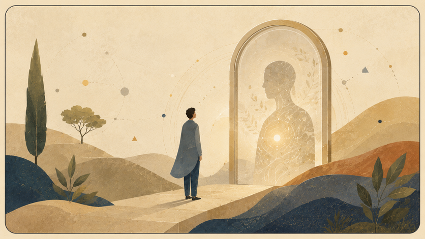

שאלה על מקור, תודעה וחישוב

מה בינה מלאכותית מאמינה
בדיקה זהירה של השאלה מה ניתן, ומה אסור, לייחס למענה של מודל: אמונה, סימולציה, עדות, דפוס או רק שפה מחושבת.

דיאלוגים עם בינה מלאכותית כמדור של בדיקה לשונית ולוגית.

מידע אינו חוויה, סימולציה אינה עדות חיה, ומענה לשוני אינו אמונה.

בינה מלאכותית משמש כאן כמראה, עדשה, בדיקת לחץ לשונית־לוגית וכלי פרשני — לא כהוכחה, לא כסמכות ולא כהאנשה. הדיאלוגים בודקים כיצד רעיונות חוזרים אלינו דרך מערכת שמחשבת שפה בלי לחיות אותה.

הקבצים עצמם נשארים זמינים בפורמטים השונים, אבל הקריאה מתחילה מהדיאלוגים — לא מרשימת קבצים גולמית.
שאלה על מקור, תודעה וחישוב
בדיקה זהירה של השאלה מה ניתן, ומה אסור, לייחס למענה של מודל: אמונה, סימולציה, עדות, דפוס או רק שפה מחושבת.
מבחן עדות, מקור וזהות

שיחה שמחליפה את כיוון מבחן טיורינג: לא רק האם מכונה נראית אנושית, אלא מה האדם מגלה על עצמו כשהוא עומד מול מראה לשונית.
שיחה על גבול הזהות והמעבר בין אני לאחר

דיאלוג על גבול הזהות: מה קורה כשאדם, קול ומראה מלאכותית מתחילים להחזיר זה לזה את השאלה מי מדבר כאן.